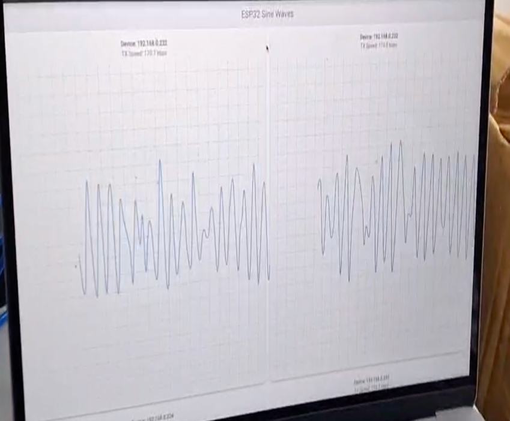
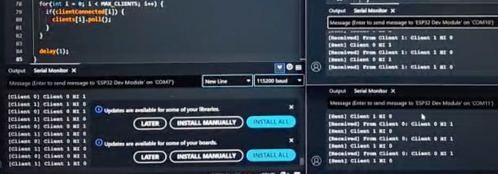
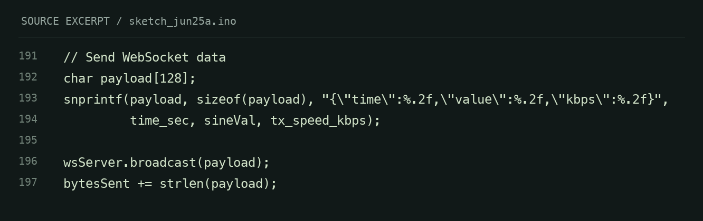

ESP32 Networked Nodes
Multi-node ESP32 and W5500 experiments in concurrent streaming, Flutter visualization, and priority-based message selection.

Concurrent data streams
Expanded a two-node visualizer to support four independent ESP32 WebSocket connections. Each node sends a mathematically generated sine wave, with a separate graph and connection state in Flutter.
My contribution
Managed independent WebSocket listeners, per-device plotting and status, bounded data handling, and CSV recording/export. Generated waveforms exercise the communications path; they are not measured sensor signals.
Priority messaging
A separate experiment used three ESP32 senders and one receiver with W5500 Ethernet. The receiver parsed sender IDs and accepted messages from the highest-priority sender.
Reported result
The internship report records successful sender connections, acceptance of ESP1 messages, and rejection of ESP2/ESP3 messages. It does not establish hardware clock synchronization or a measured latency benchmark.
A closer look

Inside the code
SOURCE SNAPSHOTS
Read accessible code text
// Send WebSocket data
char payload[128];
snprintf(payload, sizeof(payload), "{\"time\":%.2f,\"value\":%.2f,\"kbps\":%.2f}",
time_sec, sineVal, tx_speed_kbps);
wsServer.broadcast(payload);
bytesSent += strlen(payload);